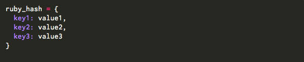

Ruby Hashes and Classes Vs. JavaScript Objects and Object Constructor Functions
Mon Nov 24, 2014
After the decision of becomming a software developer, came the question of which language to learn first. I asked around in my network, searched online and was both suprised and pleased with the most common answer: It actually doesn’t matter, once you are proficient in one programming language, picking up another one is a breeze.
Working on JavaScript this week after 5 weeks of intense ruby (and some Python in the past) I realized what all my friends actually meant. All programming languages almost seem like the same language, only with different accents/dialects (syntax), with different commonalities serving different subcultures (OOP versus functional). It downed on me that the essence lies in learning/knowing “how to solve a problem and break down the solution and logic in a way the computer will understand”. Then we learn about the computer’s language. After that you’re done! Picking up the differences between languages comes easy after that, which are far and few in contrast to their similarities.
Speaking of similarities, this week I’d like to talk about the similarities between Ruby Hashes and JavaScript Objects, as well as similarities and differences between Ruby Classes and JavaScript Object Constructor Functions.
Let’s start with Ruby Hashes and Javascript Objects.
First a Ruby Hash:
Second, a JS Object Literal:
Hash tables in Ruby (like everything else!) are objects. They contain key-value pairs and are used to store data about what ever it is you'd like to store information on. In JS they are called Object Literals. Objects in JS have properties (not keys) associated with them and these properties have values attached to them. Object literal property values can be of any data type, including array literals, functions, and nested object literals. Both ruby hashes and JS object literals seem appropriate to use when we need to store related data under one name(variable) AND we only need one copy of an object. What happens when we make another copy of the same object by assigning it to a new variable? It can be done, but it is important to notice that when a property/key value changes in the original object, it will change in every copy of the object. That's great if that is what we want, but if not it is an invitation for a massive pain in the neck.
What if we need more copies of the same object? Well, ruby very conveniently has classes for that, where you can have both set values and values that are assigned at initialization for every instance(object) of that class. JavaScript accomplishes the same with Object Constructor Functions. Here's what they look like:
First, a Ruby Class:
Second, JS Constructor Function:
As we can see, there are again many similarities. Ruby names properties as "attributes" and has a @ in front of them to define them as instance variables, meaning they are properties of "self". JS uses "this" and dot notation to refer to "self" and their properties. Also in both languages to access an object's property, the object has to be "initialized" (ruby) or "instantiated" (JS). Using classes and object constructor functions is useful in cases where multiple copies of the same object is needed, especially if these objects have to differ in some of their attributes/properties (either at the time of initializing or later in the program) while having some in common.
Hope this helps!